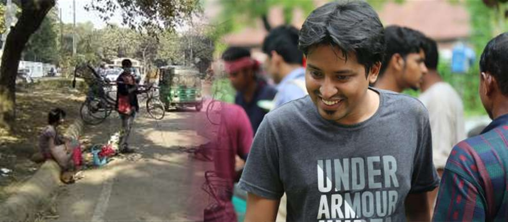
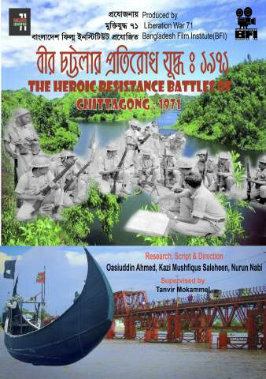
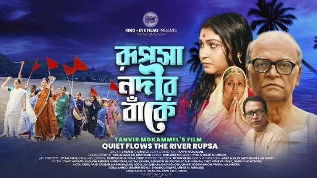
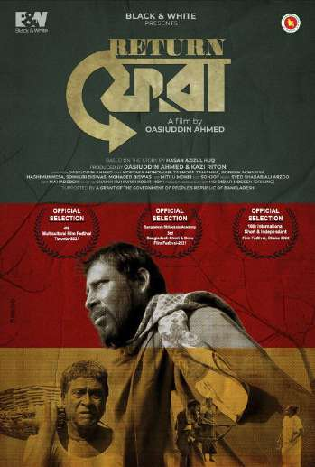
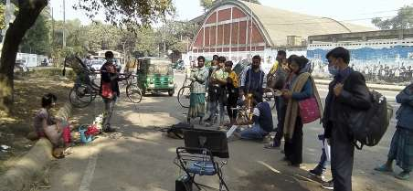
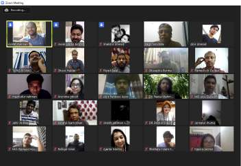
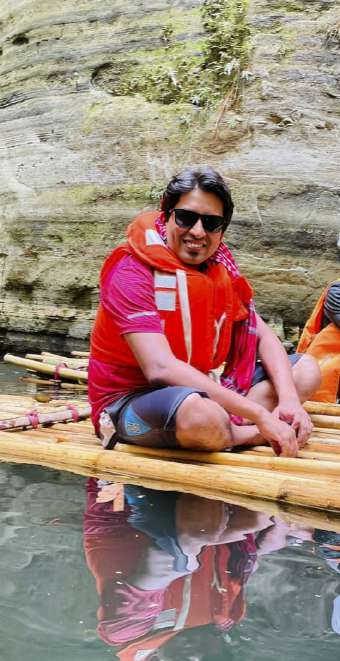

Kazi Mushfiqus
Saleheen
About The Filmmaker
Kazi Mushfiqus Saleheen is a committed Bangladeshi filmmaker, assistant director, and cinema pedagogue whose professional career is closely intertwined with the creative ecosystem of the Bangladesh Film Institute (BFI) and Kino-Eye Films. Grounded in rigorous film aesthetics, documentary investigations, and historical storytelling, Saleheen has contributed substantially both in front of and behind the camera across feature films, documentaries, and academic initiatives.
Among his most notable creative achievements is co-directing the acclaimed documentary The Heroic Resistance Battles of Chittagong: 1971 (বীর চট্টলার প্রতিরোধ যুদ্ধ : ১৯৭১). Chronicling the defiant early resistance organized by Bengali Army officers and students against the Pakistani Army in Chattogram, the documentary has been formally recognized and permanently archived by the Bangladesh Liberation War Museum as a vital historical reference.
As an assistant director, Saleheen worked under master auteur Tanvir Mokammel on the full-length feature film Rupsa Nadir Banke (Quiet Flows the River Rupsa), managing complex on-set production logistics and script supervision. He also served as assistant director alongside Syed Oasiuddin Ahmed on the critically acclaimed short fiction film Fera (Return), adapted from a story by Hasan Azizul Huq and screened at multiple international festivals including the 4th Multicultural Film Festival in Toronto.
Beyond active film production, Saleheen has played a transformative role in film education across Bangladesh. He organized shooting schedules and supervised student film productions for BFI's core filmmaking courses, and during the challenging Covid-19 pandemic, led the digital transformation of BFI's Online Film Appreciation Course, enabling cinephiles from all corners of the country to study cinema aesthetics and history. He also served the alumni community as Joint Secretary on the BFIAA Executive Council (2022–2023).
Experience & Leadership
Honors & Recognition
Archive Collections, Festival Selections & Institutional Service
| Honor / Recognition | Project / Work | Institution / Festival | Year |
|---|---|---|---|
| Permanent Historic Reference Collection | The Heroic Resistance Battles of Chittagong: 1971 | Bangladesh Liberation War Museum | 2023 |
| Official Festival Selection | Fera (Return) | 4th Multicultural Film Festival, Toronto, Canada | 2021 |
| Official Festival Selection | Fera (Return) | 16th International Short & Independent Film Festival (ISIFF), Dhaka | 2020 |
| Official Festival Selection | Fera (Return) | 3rd Bangladesh Short & Documentary Film Festival, Shilpakala Academy | 2021 |
| Nationwide Digital Education Leadership | Online Film Appreciation Course | Bangladesh Film Institute (BFI) | 2020–Pres. |
| Executive Council Leadership | Joint Secretary | Bangladesh Film Institute Alumni Association (BFIAA) | 2022–2023 |
Films & Major Projects
Directorial Work, Assistant Direction & Film Productions

বীর চট্টলার প্রতিরোধ যুদ্ধ : ১৯৭১
The Heroic Resistance Battles of Chittagong: 1971
A seminal historical documentary detailing the valiant early armed resistance of Bengali officers, soldiers, and students against the occupying Pakistani forces in Chattogram during the initial days of the 1971 Liberation War. Supervised by Tanvir Mokammel; accepted by the Bangladesh Liberation War Museum as a historic reference.
Liberation War Museum Archive
রূপসা নদীর বাঁকে
Rupsa Nadir Banke (Quiet Flows the River Rupsa)
An epic full-length feature film directed by celebrated filmmaker Tanvir Mokammel based on the life of leftist leader Manab Mukhopadhyay, spanning Bangladesh's history from the 1930s Swadeshi movement through the 1971 Liberation War. Saleheen served directly as director's assistant handling production management and script supervision.
Kino-Eye Films Feature
ফেরা
Fera (Return)
Adapted from eminent author Hasan Azizul Huq's literary work and directed by Syed Oasiuddin Ahmed, this sensitive fiction film depicts an injured freedom fighter returning from war, confronting post-traumatic stress and shifting perspectives of freedom. Saleheen contributed script supervision, continuity, and editing assistance.
Official Festival Selection
চলচ্চিত্র নির্মাণ কর্মশালা
BFI Filmmaking Course Productions
Organized, managed on-location shooting, and supervised script and technical operations for the two-month intensive filmmaking practical courses at Bangladesh Film Institute, mentoring emerging student filmmakers in production discipline, camera operations, and editorial continuity.
BFI Production Program
চলচ্চিত্র আস্বাদন পাঠক্রম (অনলাইন)
Online Film Appreciation Course
Initiated during the Covid-19 pandemic to democratize film aesthetics education across Bangladesh. Saleheen adapted the comprehensive curriculum to a digital format, coordinating interactive lectures, screenings, and evaluations for hundreds of cinephiles nationwide.
BFI Digital Academy
কিনো-আই ফিল্মস প্রযোজনা
Kino-Eye Films Collaborations
Continuous creative participation in research, location scouting, shooting, and post-production for diverse independent documentaries and short films created under the distinguished banner of Kino-Eye Films and Tanvir Mokammel.
Kino-Eye Projects